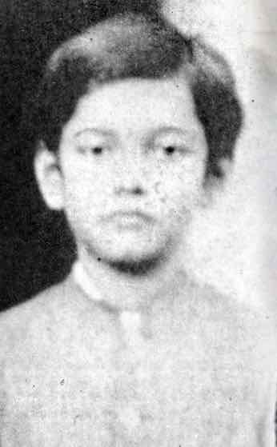
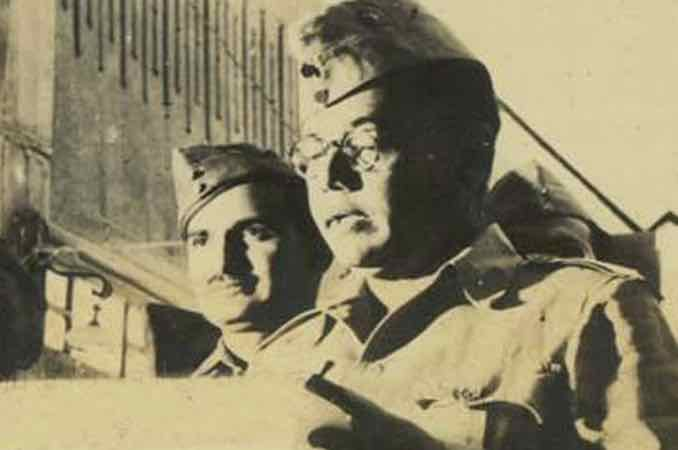
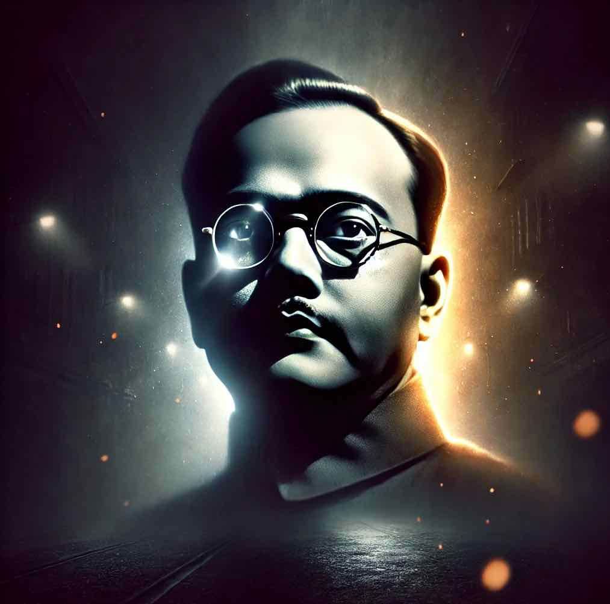

प्रारंभिक जीवन
- 23 जनवरी, 1897 को कटक, ओडिशा में जन्म।
- उनका जन्म लौकिक "चांदी के चम्मच" के साथ हुआ था, जो समृद्धि, धन और विशेषाधिकार से घिरा हुआ था।
- 1919 में कलकत्ता के स्कॉटिश चर्च कॉलेज में दर्शनशास्त्र में प्रथम श्रेणी में ऑनर्स की उपाधि प्राप्त की.
भारतीय राष्ट्रीय सेना(INA)
- 1942 में जापान के सहयोग से भारतीय राष्ट्रीय सेना (INA) की स्थापना की।
- तुम मुझे खून दो, मैं तुम्हें आजादी दूंगा' का प्रसिद्ध नारा दिया।
- आईएनए ने पूर्वोत्तर भारत में ब्रिटिश सेनाओं के खिलाफ बहादुरी से लड़ाई लड़ी।
नेताजी की मौत का रहस्य
- आधिकारिक विवरण: कथित तौर पर 18 अगस्त, 1945 को जापान जाते समय ताइपेई, ताइवान में एक विमान दुर्घटना में सुभाष चंद्र बोस की मृत्यु हो गई।
- जलने की चोटें: प्रत्यक्षदर्शियों के अनुसार वह गंभीर रूप से झुलस गया और स्थानीय अस्पताल में उसकी मृत्यु हो गई।
- जापान में राख: कहा जाता है कि उनके अवशेषों को जापान के टोक्यो में रेंकोजी मंदिर में संरक्षित किया गया है।
इस प्रोजेक्ट के बारे में
इस परियोजना को पया सरन द्वारा वर्गीकृत किया गया था।